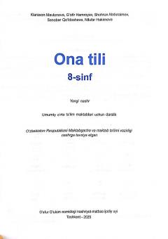

8O8-sinf o'quvchilari uchun mo'ljallangan rasmiy ona tili darsligi.
Mazkur darslik umumiy o'rta ta'lim maktablarining 8-sinf o'quvchilari uchun mo'ljallangan bo'lib, o'zbek tili fanidan davlat ta'lim standartlari asosida bilim beradi. Kitobda ona tilining nazariy va amaliy asoslari, imlo qoidalari hamda nutq madaniyatiga oid mavzular yoritilgan. Nashr O'zbekiston Respublikasi Maktabgacha va maktab ta'limi vazirligi tomonidan tavsiya etilgan.